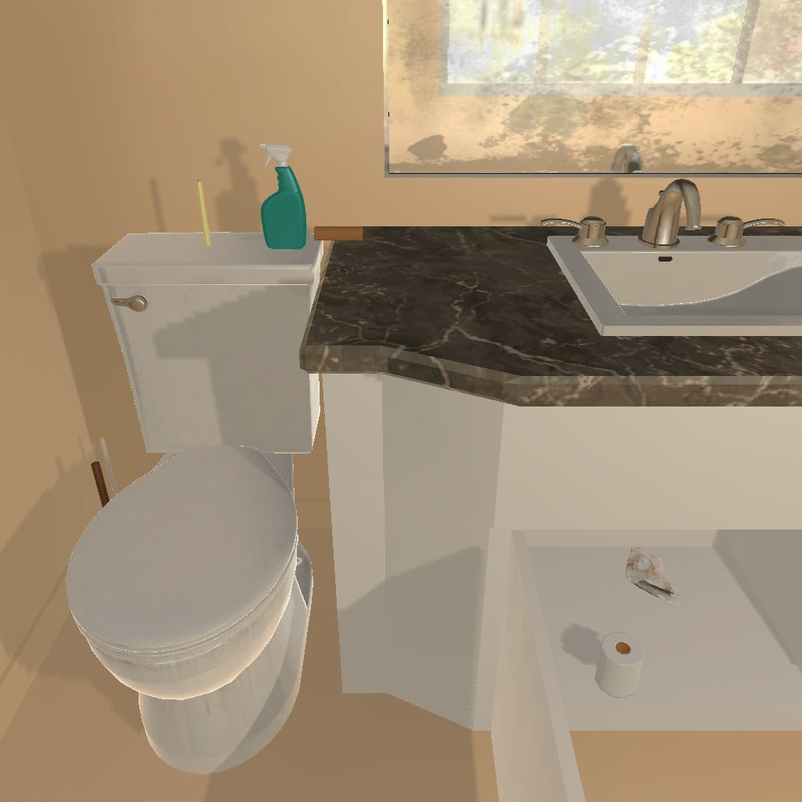

---------------------------------------------------------task: 11---------------------------------------------------------
--------------------------------------------------------------------------------------------------------------------------------------------------------------------
--------------------------------------------------------------------------------------------------------------------------------------------------------------------
Step:--------------------------------------------------------------------------17-------------------------------------------------------------------------------
----------------------------------------
VLM Prompt:
Image1:
Image2:
Image3:
**Instruction**
1. Analyze the provided images to identify all visible household objects and compare the difference between images (e.h. whether the object is opened or not and taken on hand or not), focusing on those relevant to the task description "put a clean soapbar in bathtubbasin."
2. Use the analysis of images and the task hint "The agent must find an object of the desired type, pick it up, go to a sink or a basin, clean the object with a sink or basin, and then find the correct location to place it and put it down there. The agent does not need to use soap bottle or faucet to clean the object, and the agent just needs to do action that is "clean the object with the sink or sink basin"." to answer the question: what is the most reasonable action in the choices for the task description "put a clean soapbar in bathtubbasin"?
3. Decide and write the answer using the template: The answer is: (i): , where i is the real number. If there is no desired object in images, search every place based on **Initial Observation** to find the object. And if no one is exactly correct, choose a similar answer.
**Initial Observation**
You are in the middle of a room. Looking quickly around you, you can see bathtub (1), bathtubbasin (1), toilet (1), cabinet (1-2), countertop (1), sink (1), sinkbasin (1), garbagecan (1)
**Answer Choices**
(1): go to bathtub 1
(2): go to toilet 1
(3): go to cabinet 1
(4): go to countertop 1
(5): go to sink 1
(6): go to sinkbasin 1
(7): go to garbagecan 1
(8): take cloth 2 from bathtubbasin 1
(9): take faucet 3 from bathtubbasin 1
(10): take candle 3 from bathtubbasin 1
(11): examine bathtubbasin 1
**Answer**
Let's think step by step by following the instructions.
----------------------------------------
----------------------------------------
Original Response:
Firstly, we need to identify all visible household objects in the images provided. In Image 1, we can see a toilet, a sink with a faucet, a countertop, a cleaning spray bottle on top of the toilet, and a bathtub with a cloth inside it. Image 2 shows the same objects, but the spray bottle has fallen into the sink basin, and the cloth is now in someone's hand. Image 3 only shows the bathtub with the cloth inside it.
Now, let's focus on the task description "put a clean soapbar in bathtubbasin." From the images, we can see that there is no soapbar visible. Therefore, we need to search every place based on the Initial Observation to find the object.
The task hint indicates that to clean an object, the agent does not need to use soap or a faucet; they only need to perform the action of cleaning the object with the sink or sink basin. Since we do not see a soapbar in the images, we can eliminate choices related to taking objects from the bathtub basin (choices 8, 9, 10), as well as examining the bathtub basin (choice 11) since it does not help us find the soapbar.
The most reasonable action would be to search for the soapbar in locations where it is likely to be stored when not in use, such as a cabinet or countertop. Since there is no cabinet visible in the images, but there is a countertop, the most reasonable action would be to go to the countertop to search for the soapbar.
The answer is: (4): go to countertop 1
----------------------------------------
----------------------------------------
>>> Refine Original VLM Response and Get Pure Action: go to countertop 1
----------------------------------------
-----------------------------------------------------------------
Running time: 17.404202938079834 seconds
Total Money: 6.146660000000007
-----------------------------------------------------------------
-----------------------------------------------------------------
Text Observation:You arrive at loc 4. On the countertop 1, you see a faucet 1, a toiletpaper 1, a soapbar 1, a faucet 2, a cloth 1, and a spraybottle 1.
-----------------------------------------------------------------
UNSUCCEED